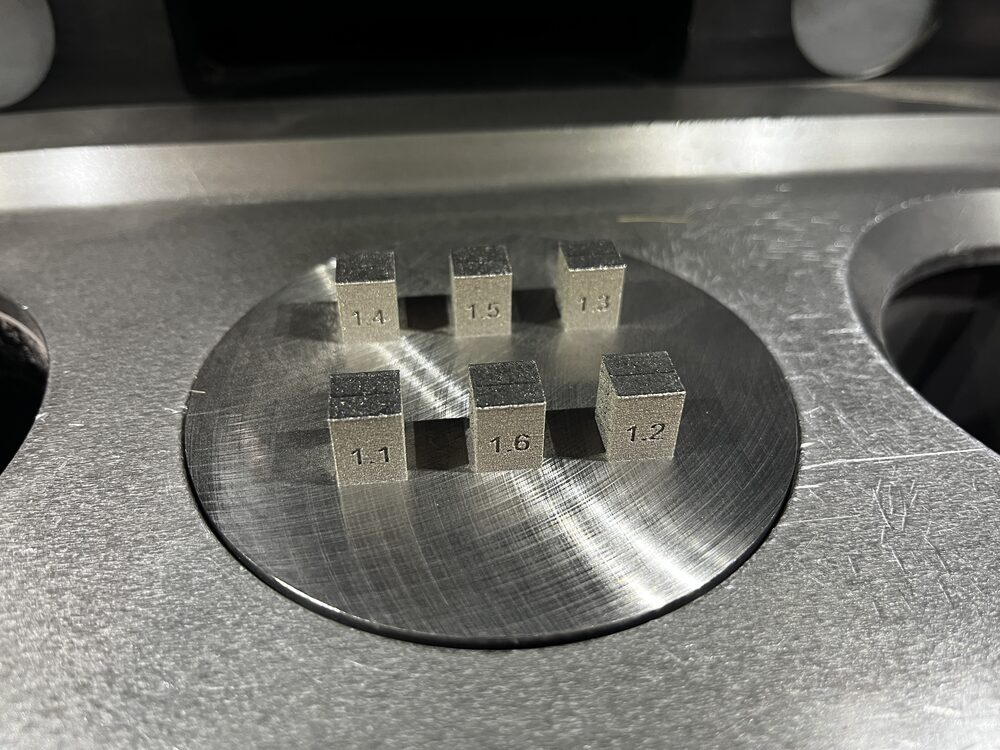

316L + Y₂O₃ / CeO₂ · TruPrint 1000 · Master's thesis 2026Masterarbeit 2026
Grain refinement of LPBF 316L steel with rare-earth oxidesKornfeinung von LPBF-316L-Stahl mit Seltenerdoxiden
First side-by-side comparison of Y₂O₃ and CeO₂ in LPBF 316L. Screened five ball-milling routes, printed four conditions at 100 J/mm³ and tested them with SEM/EDX and 200+ HV5 indents. Result: no hardness change (p = 0.35), a porosity limit at 0.7 wt.% and a traced contamination path.
Erster direkter Vergleich von Y₂O₃ und CeO₂ in LPBF 316L. Fünf Mahlrouten untersucht, vier Varianten bei 100 J/mm³ gedruckt und mit REM/EDX und über 200 HV5-Eindrücken geprüft. Ergebnis: keine Härteänderung (p = 0,35), Porositätsgrenze bei 0,7 Gew.-% und ein aufgeklärter Kontaminationspfad.
Read the project →Zum Projekt →